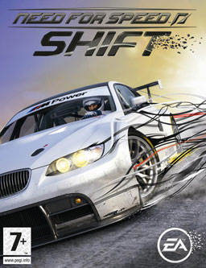

|  | |
| Tiempo de juego | No Jugado |
| Última actividad | Nunca |
| Añadido | 11/6/2024 14:41:31 |
| Modificado | 2/6/2025 16:09:56 |
| Estado de finalización | No Jugado |
| Librería | Playnite |
| Fuente | 1 TB 1 |
| Plataforma | PC (Windows) |
| Fecha de lanzamiento | 9/15/2009 |
| Puntuación de la Comunidad | |
| Puntuación de la Crítica | 83 |
| Puntuación de usuario | |
| Género | Racing |
| Desarrollador | EA Bright Light IronMonkey Studios Slightly Mad Studios |
| Editor | Electronic Arts |
| Característica | Multiplayer Single-player |
| Enlaces | Wikipedia Official website MobyGames MobyGames |
| Tag | [People] composer: Mark Morgan [People] composer: Mick Gordon [People] composer: Stephen Baysted [People] designer: Andy Tudor [People] director: Andy Garton [People] producer: Suzy Wallace [People] programmer: Ged Keaveney |
Need for Speed: Shift is a 2009 racing video game developed by Slightly Mad Studios and published by Electronic Arts for PlayStation 3, Windows, and Xbox 360. Developed by EA Bright Light, a distinct version of the game was simultaneously released for PlayStation Portable. Two mobile adaptations were developed by IronMonkey Studios for Java-compatible devices and iOS and released in 2009, with the latter version subsequently being made available for several other mobile devices. Need for Speed: Shift is the thirteenth installment in the Need for Speed franchise.
Shift's gameplay focuses on simulation, rather than the arcade racing of previous titles. It was followed by a sequel, Shift 2: Unleashed, in 2011.
As of 2021, Shift is no longer available for purchase in any online stores.
Aimed at a hardcore gamer-style audience, Shift reverts to the sports car racing simulation style of its 2007 predecessor, Need for Speed: ProStreet. Although the gameplay of these two titles are similar, Shift recreates car handling much more realistically than its predecessor, and does not contain a story. Upon starting the career mode, the player performs two laps around the Brands Hatch circuit to determine their skill. Once completed, the player is welcomed to the NFS Live World Series, and must earn stars in races to earn money, and unlock new races and tiers.
G-force plays an important role in the game, as it affects both the player and the AI opponents. The in-car view also returns, making its first appearance in a Need for Speed game since Porsche Unleashed. The in-car view is highly detailed, and it is possible to see the driver changing gears and moving his head to get a better view of the mirror. The crashes affect the player's visuals. While crashing, there is a temporary blur on screen. The sound aspects have detailed car crash sound, as well as a sharp gasp of breath from the driver before a collision.
There are 60+ cars which are divided into 4 tiers. Tier 1 refers to entry-level sports and luxury cars like the Audi TT and Infiniti G35, tier 2 refers to mid-level performance cars like the BMW M3, tier 3 refers to supercars like the Lamborghini Gallardo, and tier 4 refers to hypercars like the Bugatti Veyron and Pagani Zonda R. The car customisation options include cosmetics as well as performance mods and is more in depth than previous titles, affecting aspects such as alignment, aerodynamics, tyres, brakes, differential, and gears. Nitrous is also an option for tuning, but different from previous Need for Speed titles as it is simulated more realistically. There are body kits which affect the aerodynamics and weight reduction. There are visual customisation options like rims, vinyls and paints.
There are 19 tracks in total including real world circuits such as Brands Hatch, Nürburgring Nordschleife, Road America, Spa, Silverstone, Willow Springs, Donington Park, Autopolis, and Laguna Seca.
The PlayStation Portable version of the game offers local, ad hoc multiplayer, with no online multiplayer support.
The game spent two years in development. The game was unveiled as part of a three-game announcement that included Need for Speed: Nitro and Need for Speed: World.
The soundtrack of Shift remains similar to that of Need for Speed: ProStreet, featuring a scored soundtrack rather than a general track list as is seen in previous titles such as Need for Speed: Most Wanted, and Need for Speed: Carbon.
In addition to the standard edition, a "Special Edition" of the game was released exclusive to Europe. The Special Edition features numerous bonuses over the standard edition, including exclusive packaging, a poster of the game, and an unlockable car and race which are redeemable online. Shift was released as a bundle with the PlayStation 3 Slim 250GB to promote the game in Europe.
EA released patches with new features in addition to bug fixes. Patch 1.01 added LAN (Local Area Network) play and mouse support, providing full menu navigation to the game, to the PC version. Patch 1.02 added 5 cars (Toyota Supra Mk IV, 1971 Dodge Challenger R/T, 1969 Dodge Charger R/T, 1967 Corvette and 1967 Shelby GT-500) and a new online "Team Racing" game mode, where a Blue team of racers runs against a Red Team. In addition, the 1.02 patch fixed several performance issues (especially with ATI video cards), improved gameplay, and increased the maximum number of players online from 8 to 12.
In February 2010, EA released Ferrari DLC pack for Xbox 360 that contains 10 Ferraris, also extends the Shift's career mode with 46 new Ferrari specific challenges designed for the Ferrari cars to participate in including hot laps, eliminators, endurance races and a world tour. Completing the perfect Ferrari package are an additional 125 gamerpoints as a reward for undertaking various challenges. Available on Xbox 360 for 800 Microsoft Points the Ferraris available include the 575 Superamerica, F430 Scuderia Spider 16M, California, 599 GTB Fiorano, F430 Spider, 430 Scuderia, F430 GTC, F430 Challenge, F50 GT & Ferrari FXX. An Exotic Racing Pack was also released for PS3 and Xbox 360 which features cars like the McLaren MP4-12C, the BMW M1, the Gumpert Apollo, the Acura NSX, the Alfa Romeo 8C Competizione, the Maserati GranTurismo S and the Mercedes Benz SLR McLaren Stirling Moss.
The console versions of Need for Speed: Shift received "generally favorable" reviews, while the PlayStation Portable version received "mixed or average" reviews, according to review aggregator Metacritic.
IGN awarded it an Editor's Choice award and scored it a 9/10, citing among other things the exceptional quality of its driving experience and sound design. Official Xbox Magazine awarded Shift with a 9/10, praising its driver's view and the variety and depth presented in its career mode, as well as its multiplayer component which positively impacted single-player progression. Eurogamer gave it a 7/10, also noting that it could be a good competitor to other simulation racing games such as Gran Turismo and Forza Motorsport.
During the 13th Annual Interactive Achievement Awards, the Academy of Interactive Arts & Sciences nominated Need for Speed: Shift for "Racing Game of the Year".
Need for Speed: Shift sold 309,000 units in the United States in September 2009.
Two mobile iterations of Need for Speed: Shift were released between 2009 and 2010. One iteration bearing Out Run-style arcade racing gameplay was released for Java ME-compatible devices in 2009. Developed by IronMonkey Studios, another adaptation for iOS featuring gameplay more akin to the console versions was released on December 18, 2009, to "universal acclaim" based on six reviews, according to review aggregator Metacritic. The game was also made available for BlackBerry OS via the BlackBerry Storm 2 9550 under the title Need for Speed: Shift 3D in the United States, Canada, and Japan on March 19, 2010. This version was released for the Bada OS-based Samsung Wave alongside the launch of the device on May 24, 2010. Additionally, a port for Android compatible devices was released on June 4, 2010. Shift was released as a launch title for the Symbian-based Nokia N8 in Europe on October 15, 2010. A version for the MeeGo-compatible Nokia N9 came preloaded with the device alongside its launch on September 27, 2011.